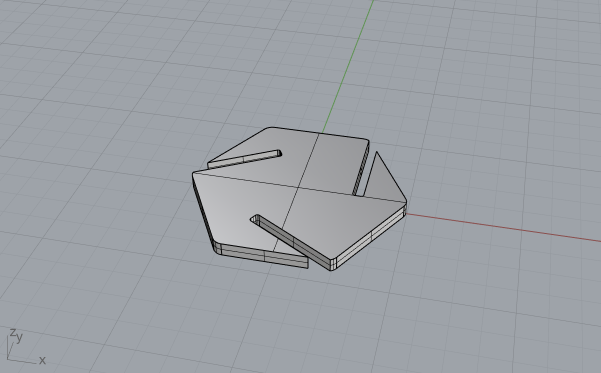
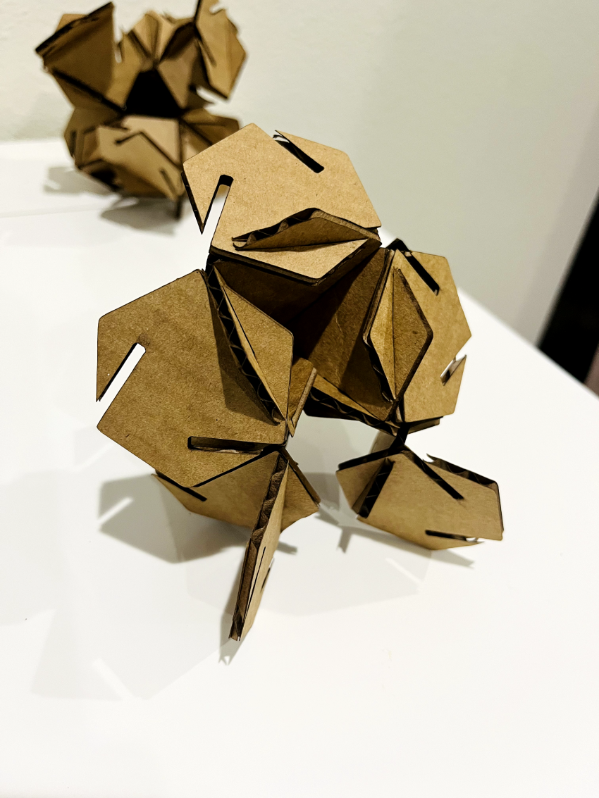
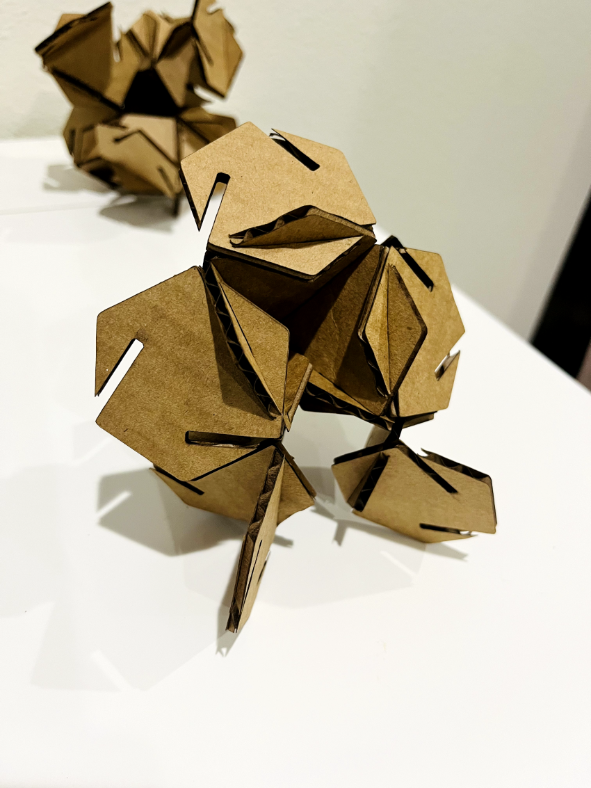

A2: Parametric Modelling with Grasshopper!
Here is my finished press fit construction kit.


For this assignment, I chose hexagon as the only base geometry to create a press-fit kit,
without using others like octagons in the last assignment.
I utilized Grasshopper to create the desired model, and I used the polygon component with
6 segments and radius to create 30+ hexagons that can fit into my cardboard.

The cardboard thickness is 0.125". To make a relatively tight fit between two pieces
pressed together, I chose the slot width to be 0.1".
 

On the laser cutter, I used the following settings: speed 30, power 100, freq 50.
Documentation for Assignment 2:
Rhino file
grasshopper file
Adobe Illustrator fileAcknowledgement:
the tutorial for this week's assignment demo from Junchao TA helps a lot!
Return to home